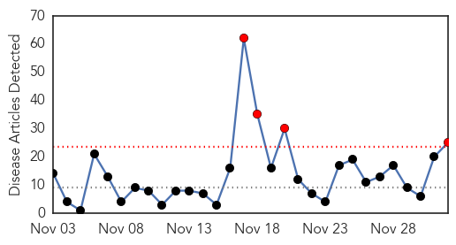
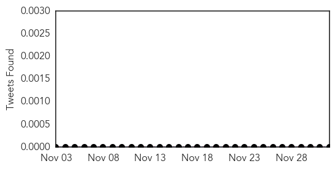
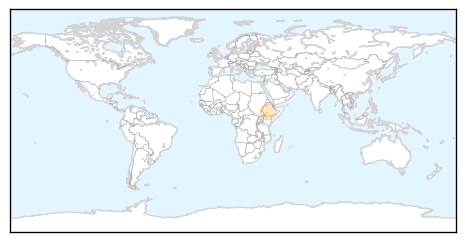

Influenza
30-Day Web Trend
4 alerts, 0 warnings

30-Day Twitter Trend
1 alerts, 0 warnings

Article Locations

Article Confidences

Top Articles:
- 0.998
- Flu cases higher this year
- 0.994
- State gears up for flu vaccine week
- 0.992
- Pakistan at high risk due to extensive travel of its citizens to and from endemic countries
- 0.992
- Get flu shots now, health experts warn public
- 0.991
- Cases of influenza predicted to increase: CDC
- 0.984
- EU-designed forecasting model developed to predict spread of Ebola
- 0.984
- Agrippal (Inactivated Influenza Vaccine) Drug
- 0.966
- Avian influenza case confirmed in Guangdong, China
- 0.947
- Avian flu detected at 2 Fraser Valley poultry farms
- 0.938
- Gov’t advises to bundle up, National, Phnom Penh Post
- 0.928
- Avian flu detected at 2 Fraser Valley poultry farms
- 0.919
- Novartis' flu vaccine in the clear over 19 deaths, says AIFA
- 0.914
- Maldives warns against poultry imports from Kerala
- 0.912
- Avian flu detected at two Fraser Valley farms; up to 18,000 chickens, turkeys dead or to be destroyed (updated)
- 0.909
- New Dutch cull ordered after bird flu confirmed as H5N8
- 0.896
- Maldives warns against poultry imports from Kerala
- 0.885
- Maldives warns against poultry imports from Indian region
- 0.869
- Poultry, People under Observation for Bird Flu in Kerala
- 0.792
- A new study suggests the HIV virus may be getting weaker
- 0.782
- Avian flu hits 18,000 Fraser Valley birds
- 0.769
- Canada: H5 bird flu detected on two British Columbia farms
- 0.753
- UPDATE: Turkeys to be destroyed after avian flu hits Abbotsford farm
- 0.749
- MoH allays vaccine fears, says influenza shots ‘perfectly safe’
- 0.699
- Avian flu confirmed at two Fraser Valley farms
- 0.538
- Avian flu confirmed on two Fraser Valley farms
Top Tweets:
- 0.932
- Avian Influenza and Pandemic Threat NewsPouch, 2 Dec 2014 : avianinfluenza, ebola EbolaResponse mers http://t.co/2qOfqzieWt
Meningitis
30-Day Web Trend
0 alerts, 0 warnings
30-Day Twitter Trend
2 alerts, 0 warnings

Article Locations
Article Confidences

Top Articles:
Top Tweets:
-
No tweets found for Dec 02, 2014